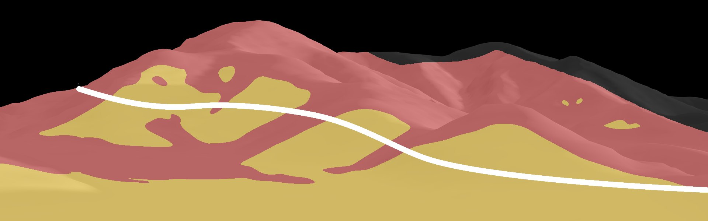
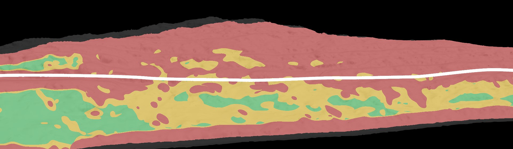

El Fogón de los Arrieros · Jáchal · GHM
Tablero de propuestas por escena
Escena por escena: a la izquierda, lo que se proyectó en 2025; a la derecha, las propuestas 2026 (German, el equipo, las animaciones terminadas y la noche y el atardecer de cada pantalla, con la forma real de los cerros). Cualquiera del equipo puede subir referencias o pedir un previo, y anotar entregas y revisiones en el calendario del final.
Criterio visual 2026
- El show es de noche: los paisajes viven en luz de luna azul y en atardeceres naranjas.
- El fuerte del mapping es el color y la iluminación que transforman la montaña, más elementos bien claros y definidos.
- Nada de elementos altos en las laderas (cactus, árboles, postes): desde el fondo de las tribunas se ven acostados.
- Las cascadas las rehace Diego en Blender 3D; las banderas las resuelve German.
- Bloque 0: blanco y negro / sepia, con el fuego como único color.
El paso de luz · timelapses
- La luz entra desde el centro: en la montaña derecha por la izquierda, en la izquierda por la derecha.
- Arranca como contraluz detrás de la cresta y barre el relieve marcando los detalles.
- Pasa rápido por el mediodía (pocas sombras) y se demora en la golden hour.
- Loop: luna → amanecer → mediodía → atardecer → crepúsculo → luna.
Cómo participar
- En la escena tocá ✦ Pedir previo con prompt (necesitás tu usuario de GitHub invitado al repo).
- Escribí qué buscás, arrastrá hasta 4 imágenes de referencia y marcá luna, atardecer y/o timelapse.
- Submit: la cola lo manda a la PC16 o la PC17, la que esté libre, y te responde en el pedido con los previos (unos 3 min; con timelapse, ~10).
- Para sumar imágenes sin generar, usá ＋ Subir referencia.
- Entregas, revisiones y reuniones: botón Calendario de arriba y + en el día.
- Comentarios: al pie de cada escena, escribí y tocá Enviar comentario.
Zonas aptas para elementos definidos
Calculado con el Z-depth renderizado desde la cámara de cada proyector. Donde la superficie mira al público y es casi plana, lo proyectado se mantiene desde cualquier punto de las tribunas. La línea blanca es el camino por donde pasaron los granaderos en 2025.
Figuras y elementos más altosFiguras bajas o recorridos horizontalesSolo color, textura y luzCamino granaderos 2025


Cargando escenas…
Calendario de producción
Entregas, revisiones y correcciones.
EntregaRevisiónCorrecciónReunión / otro✓ hecho (nota cerrada)
Cargando calendario…